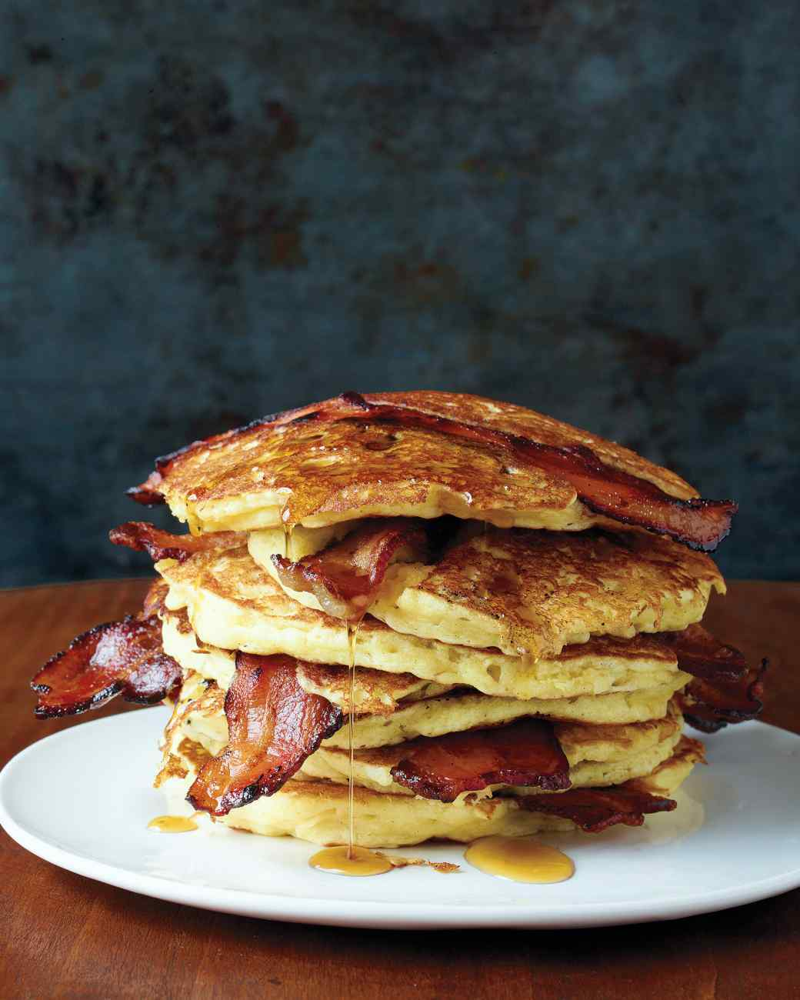
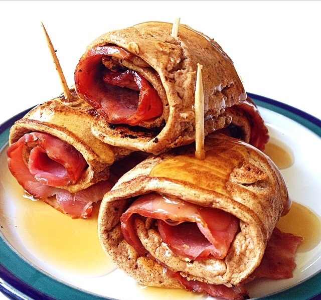

Bacon Pancakes
These bacon pancakes satisfy both the sweet and savory senses. Surprise your family with this breakfast dish one weekend morning. So go ahead and take some bacon and put it in a pancake.



Ingredients
- 1 cup all-purpose flour
- 2 tablespoons sugar
- 1 1/2 teaspoons baking powder
- 1/2 teaspoon baking soda
- 1/2 teaspoon caorse salt
- 1 1/4 cups buttermilk
- 2 tablespoons unsalted butter, melted
- 1 large egg
- 8 slices bacon
- Pure maple syrup (optional)
Directions
- Preheat oven to 200 degrees. In a bowl, whisk together flour, sugar, baking powder, baking soda, and salt. In another bowl, whisk together buttermilk, melted butter, and egg. Whisk flour mixture into buttermilk mixture just until moistened, with small to medium lumps remaining.
- In a large cast-iron or nonstick skillet or on a griddle, cook bacon over medium-high until fat is rendered and bacon is browned on one side, 5 to 6 minutes. Flip and cook until golden and crisp on underside, 1 to 3 minutes. Drain bacon on paper towels; pour off all but 1 teaspoon fat from skillet (reserve for another use).
- Heat skillet over medium. Pour 1/4-cupfuls batter into skillet and top each with a bacon slice. Cook until some bubbles appear on top of pancakes and a few have burst, about 2 minutes. With a spatula, carefully flip pancakes and cook until browned on underside, about 2 minutes. Transfer to a platter, bacon side up, and loosely tent with foil. Keep pancakes warm in oven and repeat with remaining batter, adding more bacon fat if needed. Serve with pure maple syrup, if desired.